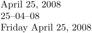
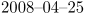
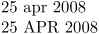

Contents
Summary
The command
\date
is used to typeset a formatted date
Settings
| \date[...=...,...][...,...] | |
| d | number |
| m | number |
| y | number |
| [...,...] | year year:name y y:name yy Y Y:name YY month month:mnem month:hebrew month:jalali m m:mnem m:hebrew m:jalali MONTH MONTH:mnem MONTH:hebrew MONTH:jalali mm M day day:name day:+ day:ord day:++ day:highord d d:name d:+ d:ord d:++ d:highord dd dd:+ dd:ord dd:++ dd:highord D D:+ D:ord D:++ D:highord weekday weekday:mnem weekday:hebrew weekday:jalali w w:mnem w:hebrew w:jalali WEEKDAY WEEKDAY:mnem WEEKDAY:hebrew WEEKDAY:jalali W referral space \\\\\\\\␣ text hebrew:to jalali:to jalali:from |
| Option | Explanation |
|---|---|
| The name suffixes indicate number conversions. Any conversion, either built-in or defined by \defineconversion, can be used there. | |
| year | Year using arabic digits |
| year:name | Year using a defined conversion |
| y | Alias for year |
| yy | Year using two arabic digits |
| Y | Alias for year |
| YY | Alias for yy |
| month | Month using long name |
| month:mnem | Month using mnemonic |
| month:hebrew | Month name in Hebrew calendar |
| month:jalali | Month name in Jalali calendar |
| m | Alias for month |
| MONTH | Month using long name, in all uppercase |
| mm | Month using two arabic digits |
| M | Month using arabic digits |
| day | Day using arabic digits |
| day:name | Day using a defined conversion |
| day:+ | Alias for day:ord |
| day:ord | Day using arabic digits, with ordinal indicator suffix |
| day:++ | Alias for day:highord |
| day:highord | Day using arabic digits, with ordinal indicator suffix in superscript |
| d | Alias for day |
| dd | Day using two arabic digits |
| D | Alias for day |
| weekday | Weekday using long name |
| weekday:mnem | Weekday using mnemonic |
| w | Alias for weekday |
| WEEKDAY | Weekday using long name, in all uppercase |
| W | Weekday using arabic digits |
| referral | Date in iso format (yyyymmdd) |
| space | Typesets a space as separator |
| \\\\\\\\\\\\\\\\␣ | Typesets a space as separator (actual input: \ , there is too much string quoting on the wiki) |
| text | Any user-supplied separator |
| hebrew:to | Convert date to Hebrew calendar first |
| jalali:to | Convert date to Jalali calendar first |
| jalali:from | Convert date from Jalali calendar first |
Settings name
| \date[...=...,...][...] | |
| d | number |
| m | number |
| y | number |
| [...] | name |
| Option | Explanation |
|---|---|
| name | This is a date format defined with \definedate |
Description
Display a date. First argument specifies the date using the day (d), month (m) and year (y). If omitted the current date is assumed, but this is not officially supported. Use
\currentdate
if you want the current date.
You can also insert delimiters between the fields (e.g. commas, spaces, see examples).
Examples
Example 1
-
\date[d=25,m=4,y=2008] \par \date[d=25,m=4,y=2008][dd,--,mm,--,yy] \par \date[d=25,m=4,y=2008][weekday,month,day,{,~},year] \par
- 
Changing the default formatting
To change the formatting of the date in a global fashion the command \setuplanguage is used. A change to ISO 8601 for instance can be achieved as follows:
-
\setuplanguage [en] [date={year, –, mm, –, dd}] \date[d=25,m=4,y=2008]
Produces
- 
For non english the setuplanguage command should be followed or preceded by setting a mainlanguage or it will not show up.
\setuplanguage [nl] [date={dd, –, mm, –, year}] \mainlanguage [nl]
Using and setting up mnemonics
To get a short month use month:mnem or MONTH:mnem as follows:
-
\date[d=25,m=4,y=2008][day,~,month:mnem,~,year] \par \date[d=25,m=4,y=2008][day,~,MONTH:mnem,~,year]
- 
It is possible to redefine the month:mnem form to have a starting capital (e.g. 25 Apr 2008). Put the following in your environment file:
\setuplabeltext [en] [ january:mnem=Jan, february:mnem=Feb, march:mnem=Mar, april:mnem=Apr, may:mnem=May, june:mnem=Jun, july:mnem=Jul, august:mnem=Aug, september:mnem=Sep, october:mnem=Oct, november:mnem=Nov, december:mnem=Dec]
To get a short weekday use weekday:mnem as follows:
\date[d=25,m=4,y=2008][weekday:mnem,~,day,~,month,~,year] \par
It is possible to redefine the weekday:mnem form to have a starting capital. Put the following in your environment file:
\setuplabeltext [en] [ monday:mnem=Mon, tuesday:mnem=Tue, wednesday:mnem=Wed, thursday:mnem=Thu, friday:mnem=Fri, saturday:mnem=Sat, sunday:mnem=Sun]